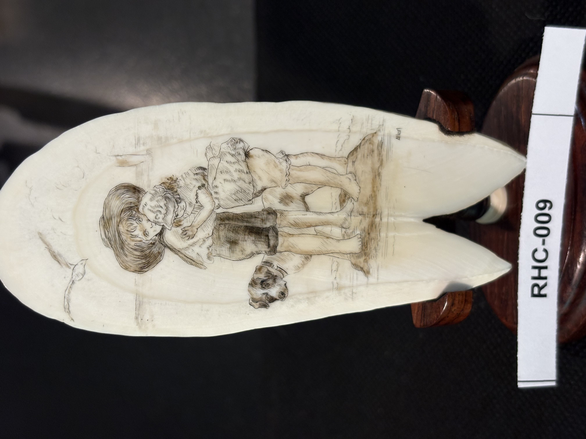
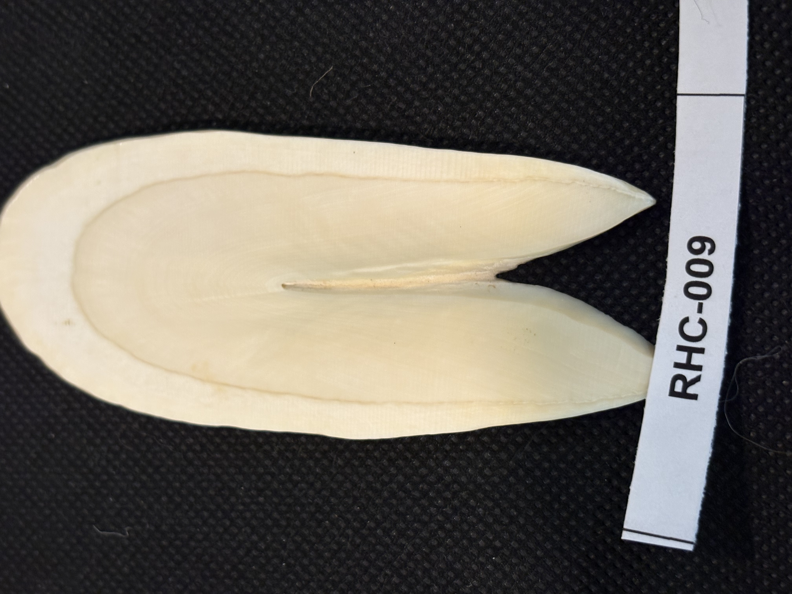

RHC-009 reviewed
Children and Dog Genre Scene, Vertical Cross-Section of a Sperm Whale Tooth, signed Allen


- Object Type
- Engraved vertical cross-section cut of a sperm whale tooth (per Richard H. Cornelia — a highly unusual cut, not a naturally forked tooth or panel), with a deliberate triangular cut at the base
- Material
- Sperm whale tooth, cross-sectioned vertically (confirmed by Richard H. Cornelia). The reverse/unengraved face (RHC-009-c) shows the concentric, layered ring pattern typical of a tooth cross-section, plus the triangular cut at the base described above.
- Dimensions (cm)
- length: 10.5cm — Length (~10.5cm) measured off the cm scale; width not separately measured — ruler only runs along one axis in these photos.
- Subject Matter
- A genre scene of two children (a girl and a boy, both in period dress) and a dog, standing together outdoors — a departure from the wildlife/nautical/lighthouse themes seen elsewhere in this collection. Rendered in warm sepia/brown ink tones rather than the pure black ink line work seen on RHC-001, 006, 007, and 008.
- Inscriptions
- “Allen”
- “Allen”
- Artist Attribution
- Allen
- Date / Period
- Undated; signed but no year visible
- Mount / Display Stand
- Mounted for display in a dark wood cradle/fork base shaped to match the piece's forked bottom — a custom-fitted mount rather than a simple rod-and-disk or turned-puck style seen on other items.
- Color / Technique
- Sepia/brown ink line scrimshaw engraving with cross-hatched shading — distinct warmer palette compared to the black-ink pieces elsewhere in the collection.
- Condition Notes
- Surface shows light natural mottling/staining; no visible cracks. A small natural split is visible at the base of the fork on the reverse (RHC-009-c) — appears to be an inherent material feature rather than damage, but worth a closer look in person. Not physically examined.
- Distinguishing Features
- Largest and most unusually shaped piece cataloged so far — a broad, flat, forked-base panel rather than a natural whole-tooth silhouette. Signed 'Allen.' Genre subject (children and dog) and sepia palette are both distinct from the rest of the collection to date.
- Legal / Regulatory Status
- Material and species not confirmed — flag for legal review before any loan/sale once material is identified, same as other presumed-ivory/tooth items in this collection.
- Rights / Copyright
- Signed 'Allen' — underlying image likely remains under copyright of the artist or their estate, independent of physical ownership.
- Keywords
- children dog genre scene sepia signed Allen forked panel unusual shape scrimshaw
- Status
- reviewed
- Date Cataloged
- 2026-07-15
Open Research Questions
Research finding (phase 3, 2026-07-15): General web search for the scrimshaw artist name 'Allen' turned up no specific public match — the name is common enough that it's not resolvable without additional identifying detail (a more complete signature reading, date, or region would help narrow it down); this is a lower-priority artist ID compared to the more distinctively-named leads elsewhere in the collection. Per Richard H. Cornelia (written review of printed catalog booklet, 2026-07-19): "This is a highly unusual vertical cut cross-section of a sperm whale tooth. Notice the triangular cut at the base." This explains the naturally forked/cloven-looking base silhouette noted in distinguishing_features — it is in fact a deliberate triangular cut, not a natural forked tooth form.